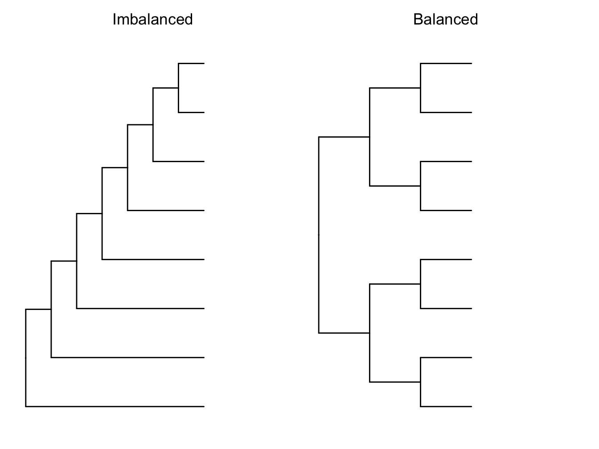
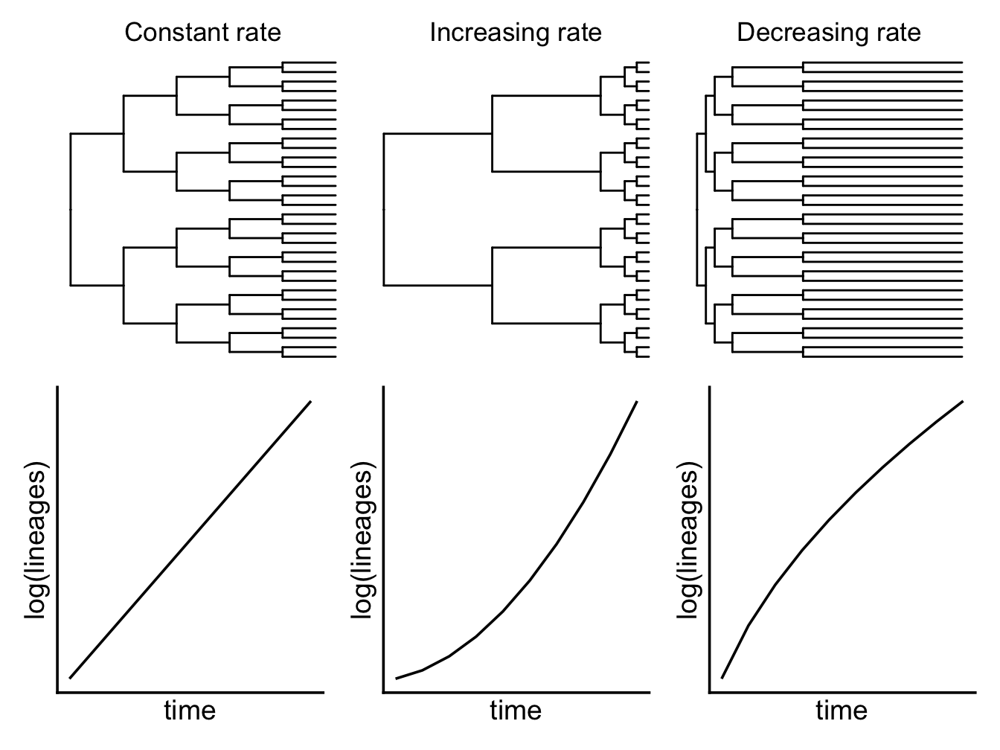
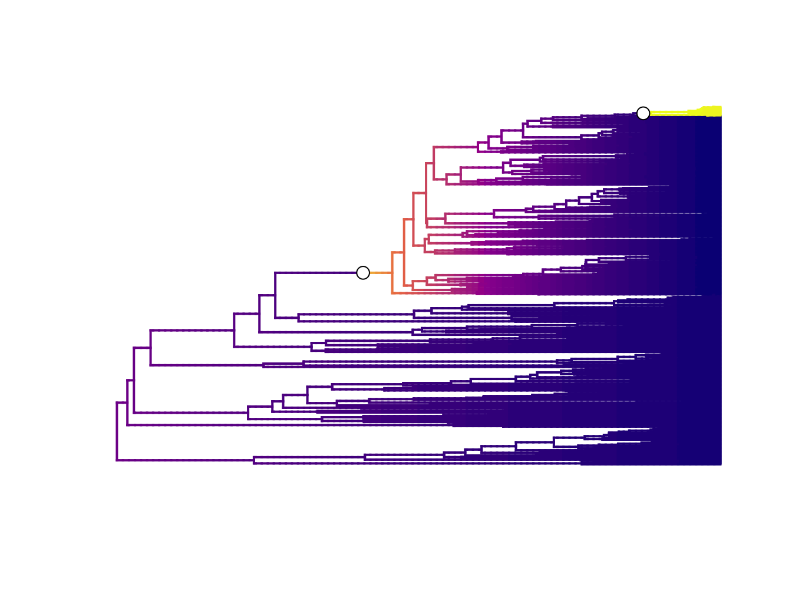
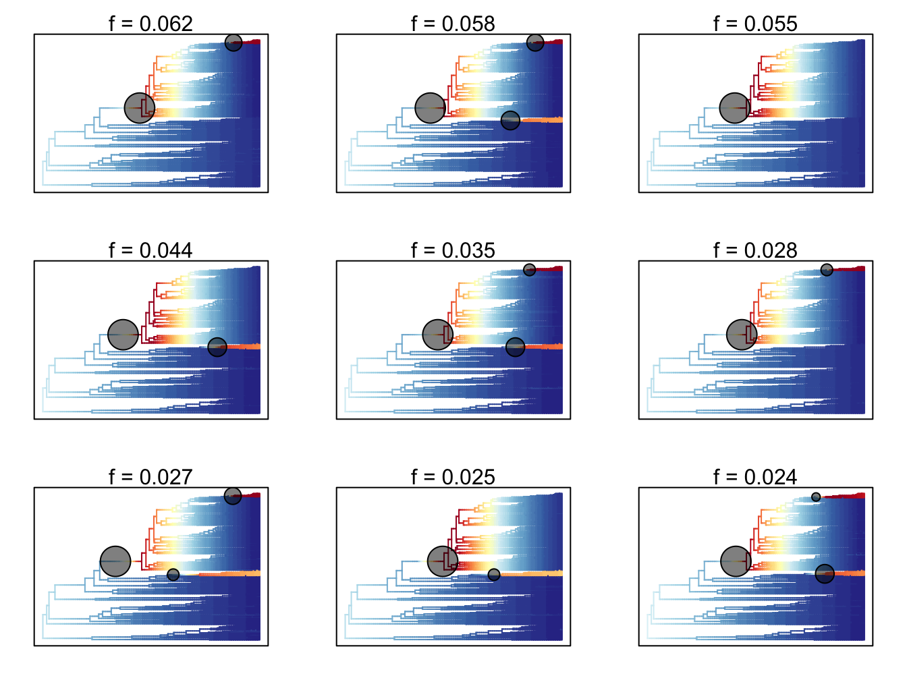

Chapter 8 A very brief introduction to diversification analyses
In this chapter we are going to very briefly introduce you to diversification analyses. Most introductory phylogenetic comparative methods courses cover this at least briefly, but a lot of the nuance lies beyond the scope of this Primer. If you need to use these kinds of methods for your analyses this should be a starting point for further reading and exploration. An excellent introduction can be found in Luke J. Harmon (2018).
8.1 Why do we study species diversity?
Diversity, or species richness, is not evenly spread across the Tree of Life. Some groups have lots of species, while others have very few. A classic example is that of the animal phyla, where one single phylum, Arthropoda, has over 1 million species, while other phyla, for example Micrognathozoa (https://en.wikipedia.org/wiki/Limnognathia), have only one or a few species. This uneven diversity is found at all taxonomic levels; whether we look at species in phyla, or genera in families etc., we tend to see the same pattern. Some groups are more diverse than others. This has led to many biologists over the years trying to find out why this pattern exists. Is there something special about groups with lots of species?
Many questions, predictions and hypotheses exist around uneven diversity. These form some of the most interesting and long lasting ideas in evolutionary biology.
8.2 Phylogenetic tree imbalance
Although early investigations of diversity looked at how species were divided taxonomically, it’s clear that species don’t just spontaneously appear. Species evolve from other species, so accounting for phylogenetic relationships is really important. One of the easiest ways to investigate diversity on a phylogeny is to look at phylogenetic imbalance.
Phylogenetic imbalance occurs where sister clades on a phylogeny have different numbers of species. Phylogenies can vary from completely imbalanced (Figure 8.1) where one sister clade has one species and all the others are in the other clade, to fully balanced, where the two clades have an equal number of species (Figure 8.1). Some degree of imbalance is expected in real phylogenies, so to measure how imbalanced a tree is we can compare it to a simulated trees with the same number of species.
## Ignoring unknown labels:
## • size : "2"
## Ignoring unknown labels:
## • size : "2"
Figure 8.1: XXX
There are a bunch of metrics for measuring phylogenetic imbalance reviewed in Mooers and Heard (1997) which we won’t expand on here.
8.3 Birth death models and diversification rates
In recent years, rather than looking at tree shape to investigate uneven diversity across clades, it has become more common to look at diversification rates. Diversification is the rate of speciation minus the rate of extinction. Phylogenies give us an idea about both of these processes, though they’re better at showing speciation than extinction in most cases (Rabosky 2010).
The simplest models for looking at this are birth death models, where the rate of speciation (birth; \(\lambda\)) and rate of extinction (death, \(\mu\)) combine to get a rate of diversification. We won’t talk about these in detail here, but if you’re interested there is an excellent introduction in Luke J. Harmon (2018). If diversification rates are high we tend to find phylogenies with lots of species. We often use a pure-birth model, i.e. a model where there is no extinction, just speciation, as a null model in diversification analyses. Under a pure-birth model we expect an exponential increase in the number of species through time. If there are interesting increases or decreases in diversification rate over time, our results should not fit the pure-birth null.
Biologists love to reuse the same Greek letters over and over. \(\lambda\) here is speciation rate. This is not the same as Pagel’s \(\lambda\).
8.4 Lineage through time plots and the \(\gamma\) statistic
One simple way to investigate diversification rates is to look at lineage through time or LTT plots. These show the number of lineages in a phylogeny at a given time on the y-axis, and the time on the x-axis. By convention we log transform the y-axis because under a pure-birth (i.e. no extinction) model the number of lineages should increase exponentially over time, so if we log this it gives us a nice straight line. LTT plots can be used to investigate changes in diversification rate in a phylogeny. If the plotted relationship is a straight line this indicates that lineage diversification is occurring at a constant rate through time (Figure 8.2). Alternatively, an exponential curve suggests that diversification rates are increasing through time (Figure 8.2), and an asymptote suggests diversification rates are decreasing through time (Figure 8.2). Generally we’d compare these curves to simulated LTT plots assuming a pure-birth model to check whether the pattern we are seeing is significantly different to a pure-birth null model.
## Ignoring unknown labels:
## • size : "2"
## Ignoring unknown labels:
## • size : "2"
## Ignoring unknown labels:
## • size : "2"
Figure 8.2: YYY
In Figure 8.2 we used simulated data to get our LTT plots, but in reality these plots are rarely quite so straightforward to interpret. Rather than relying on an interpretation of these plots, we can use the \(\gamma\) (gamma) statistic (Pybus and Harvey 2000). The \(\gamma\) statistic is based on the internode distances in a phylogeny, i.e. the distances between the nodes. If the internal nodes are closer to the root than expected under a pure birth model, then \(\gamma < 0\). Conversely, if the internal nodes are closer to the tips than expected under a pure birth model, then \(\gamma > 0\).
Similarly to other methods discussed in this section, the observed \(\gamma\) statistic is compared to values obtained from pure-birth simulations. Significance is determined by seeing where the observed value falls within the distribution of values from the simulations. Significantly negative values of the \(\gamma\) statistic suggest that rates of diversification have decreased through time, whereas the significantly positive values suggest that rates of diversification have increased through time.
More recently developed methods along a similar theme include TESS (Höhna, May, and Moore 2016) and TreePar (Stadler 2011).
8.5 Diversification rate variation across branches
The methods above look across whole phylogenies, but many of the questions we have revolve around individual groups/clades within phylogenies. These simple models also estimate a single rate of speciation and extinction across a whole tree. Obviously this is a huge oversimplification; we expect lots of changes in rates, or rate heterogeneity, through time, especially across fairly large trees.
A large variety of methods have been developed that attempt to deal with this problem including MEDUSA (Alfaro et al. 2009), various methods in BayesTraits (M. Pagel and Meade 2007), BAMM (Rabosky 2014), and RevBayes (Höhna et al. 2016). The method you are most likely to come across in the literature is BAMM, so we will briefly outline this here.
8.5.1 BAMM!
BAMM (Bayesian Analysis of Macroevolutionary Mixtures; Rabosky (2014), Rabosky et al. (2014)) identifies discrete shifts in diversification rates at nodes of a tree (it can also investigate trait evolution but we will focus on diversification rates here), i.e places where diversification rates speed up or slow down. BAMM looks for rate shifts across the whole tree, so it can find one or more shifts. It does this using reversible jump Markov Chain Monte (MCMC) methods to automatically explore a vast universe of possible models (reversible jump MCMC is a special kind of MCMC algorithm; see Rabosky (2014) for details). It is biased towards simpler models (a common tactic in most evolutionary models, e.g. parsimony) so rarely results in lots of rate shifts.
A quick (very simplified) recap of Bayesian models. Bayesian methods calculate the probability of the model given the data, P(model|data), whereas Maximum Likelihood models calculate the probability of the data given the model, P(data|model).
To fit Bayesian models we first assign a set of priors. These are our hypotheses about how we think the world works. They provide a starting point for the MCMC (Markov Chain Monte Carlo) algorithm to search model space.
You can think of Bayesian MCMC algorithms as a little robot friend wandering about. The robot starts where the priors suggest it should, then searches the virtual space of all possible model fits to find the parameters for your model (e.g. slopes, intercepts, rates of speciation etc.). The first few (hundreds, thousands, sometimes millions depending on the model!) tend to be poor attempts as the robot is still getting oriented, so we exclude these from the output as burnin. The robot keeps going until it’s tried as many models as you asked for (again this can be thousands to millions depending on the model). Because the robot will find very similar results close together due to the nature of the way it searches, we say that the results are autocorrelated. To deal with this, we only sample the results every so often, rather than sampling all of them. This is called thinning and we tell the robot in advance how we want to thin the sample (usually we ask for an answer every couple of thousand attempts).
Finally the robot gives us a distribution of results (often thousands or even millions), that we call the posterior distribution (or just the posterior). The posterior is a sample of all possible results across all of models fitted, in proportion to their posterior probability. This means there will be a range of results in the posterior, but those the robot encountered more often will appear more often, and those it encountered rarely will appear less often.
Before we look at the results, we need to check that the robot did a good job and converged on a sensible set of results, rather than wandering all over the place like it did during the burnin phase.
This is a simplification of course! But the take home is that to fit Bayesian models we need to consider priors, burnin, number of iterations, thinning, convergence and the posterior (in addition to the model, data and phylogeny!). If you want to learn more about Bayesian statistics we highly recommend McElreath (2020) and the accompanying online course.
For each MCMC run (generally over 1 million iterations are run in these analyses), BAMM simulates speciation and extinction along the tree, extracts the number of rate shifts, and then works out the probability of that particular combination of rate shifts occurring. The resulting BAMM outputs are a sample of all possible combinations of rates and rate shifts across all models, in proportion to their posterior probability. The posterior, or distribution of results, from BAMM will thus contain lots of different combinations of rates and rate shifts, but those that occur more often across all the models will appear more often than those that occur rarely.
In the posterior, we call each of these possible combinations distinct shift configurations. These are the most probable configuration of shifts from one model from the posterior. For example, one shift configuration may be a speed up at node 34 and a slow down at node 22 on model 10000. Each model in the posterior might have a different distinct shift configuration, or they might all be very similar. It depends on the dataset.
The number of possible distinct shift configurations is huge. Eventually, if you ran BAMM for for long enough you’d find a shift on every branch in the tree (because the branches can show shifts due to the effect of the prior alone).
We know that all the distinct shift configurations are possible but they aren’t equally probable. As mentioned above some may be common, and others rare. We need some way of summarising thousands of models, and taking this into account. There are two main approaches.
- Overall best shift configuration You can get this by looking at the maximum a posteriori (MAP) probability shift configuration, i.e. the one that appeared the most often in the posterior. This is a bit like using a consensus tree in phylogenetics. However, for most real datasets, the best rate shift configuration is merely one of a large number of possible rate shift configurations that have similar probabilities. So this method is not preferred (also if you’ve bothered to fit over 1 million models it seems pointless to just get one result!). The overall best rate shift configuration for dragonflies (see online materials and (letsch2016not?)) is shown in Figure 8.3.
## Reading event datafile: data/dragonflies_event_data.txt
## ...........
## Read a total of 2501 samples from posterior
##
## Discarded as burnin: GENERATIONS < 2490000
## Analyzing 2252 samples from posterior
##
## Setting recursive sequence on tree...
##
## Done with recursive sequence## Processing event data from data.frame
##
## Discarded as burnin: GENERATIONS < 0
## Analyzing 1 samples from posterior
##
## Setting recursive sequence on tree...
##
## Done with recursive sequence
Figure 8.3: Best rate shift configuration from BAMM for dragonflies. Data from Letsch et al. 2016
- Credible shift sets An alternative way to present the results is to summarise all the distinct shift configurations. However, not all distinct shift configurations are going to be significant. Therefore, BAMM splits shifts into “important” ones that help explain the data (core shifts) and ones that are less important (or likely just due to priors) using marginal odds ratios. Specifically, BAMM computes the marginal odds ratio for each rate shift for every branch in the phylogeny. It then excludes all shifts that are unimportant using a pre-determined threshold value (usually 5). The remaining shifts are the credible shift set. These are usually reported in papers using BAMM. The top nine shift configurations from the credible shift set for dragonflies (see online materials and (letsch2016not?)) is shown in Figure 8.4.
## Omitted 507 plots
Figure 8.4: Top nine distinct rate shift configurations from the credible shift set from BAMM for dragonflies. Data from Letsch et al. 2016
Predictions are better than post-hoc stories. BAMM is great, but it will often give answers you didn’t expect. It is not a good idea to just run a BAMM analysis and see what happens. Most phylogenies will contain some rate shifts, but if you don’t have hypotheses/predictions about what factors may influence diversification rates in your group then you’ll be stuck trying to invent reasons for these rate shifts after the fact. This is not a great way to do science, and can lead to some very odd conclusions if you’re just fishing around for ideas! Instead, thoroughly research your study group, think about why some species/groups/clades might diversify more rapidly than others, then run BAMM to see if your predictions are supported or not.
8.5.2 Assumptions and issues with BAMM
Like all methods, BAMM has a number of important assumptions and issues. First, it assumes that evolutionary dynamics are described by discrete shifts at nodes. It could equally be gradual changes along branches. BAMM cannot detect this, but neither can any other method (yet!). However it is worth remembering this when interpreting results, especially on long branches.
Second, the prior for the number of expected shifts will have a large effect on how many shifts are detected, particularly for long branches as the probability of seeing a shift due to the prior alone increases with branch length. To solve this BAMM estimates marginal odds ratios, scaling each marginal shift probability by the prior and branch length. You can (and should) check for this problem if you use BAMM.
Third, BAMM (and all other similar methods) gives inaccurate results for phylogenies with incomplete sampling, i.e. where you don’t have every species in your phylogeny. This may be quite likely if you’re working with invertebrates or plants or pretty much anything other than mammals and birds! If the sampling is non random, for example, you’re missing a whole clade, the results will be even weirder. It’s best to only use BAMM where you’ve got a fairly complete phylogeny.
Additionally, there has been a quite a lot of debate about the validity of BAMM since 2016. Moore et al. (2016) (and others) proposed several serious issues with BAMM, which basically boil down to two main points:
- BAMM outputs are highly sensitive to the priors used
- The likelihood function BAMM uses is wrong
Rabosky and colleagues have refuted these criticisms here: [http://bamm-project.org/prior.html], [http://bamm-project.org/replication.html], [http://bamm-project.org/developertoggle.html], [http://bamm-project.org/mea_likelihood.html], and [http://ift.tt/2m7qv6T].
There’s no consensus just yet so use with caution, and be prepared to defend your choice to grumpy supervisors/collaborators/journal reviewers…
Think about your sampling! Diversification rate analyses are powerful, exciting, and fairly easy to implement. As such they’re very tempting methods to use without really thinking carefully about the caveats, of which there are many! Incomplete sampling is a really big issue to consider. Sampling is generally incomplete and uneven; we never have every possible species in our phylogenies. If you only use living species, it is important to consider how extinct diversity may effect your conclusions. If you use living and fossil species you need to remember that for most groups the fossil record is patchy at best. If species are missing at random this is less of a problem, but if you’re missing a big chunk of diversity with a certain trait, or in a certain time period, your results may be meaningless at best, misleading at worst.
8.6 State-dependent diversification
Another thing people commonly consider when thinking about variable rates of diversification, is whether certain characteristics or traits might lead some species/groups/clades to be more successful, and thus have more species, than others (Nee, May, and Harvey 1994). There are a series of phylogenetic comparative methods that deal with these kinds of questions known as state (or trait or character) dependent diversification models. The simplest, and most commonly used is the binary state speciation and extinction model, BiSSE (Maddison, Midford, and Otto 2007). These kinds of analyses have been applied extensively in to a variety of taxa and traits (e.g. Emma E. Goldberg et al. 2010; Price et al. 2012; Givnish et al. 2014).
In the BiSSE model we work with binary traits, for example in plants we might use woody or herbaceous growth form as our trait. We assume that species with one state of the trait (e.g. woody) are diversifying at a different rate to species with the other state of the trait (e.g. herbaceous). To fit the model we assume that species with the first state (by convention we have state 0 and state 1 in binary traits models) have one speciation and extinction rate (\(\lambda_0\) and \(\mu_0\)), and species with the second state have a different speciation and extinction rate (\(\lambda_1\) and \(\mu_1\)). The model assumes that trait states do not change at speciation events. The models have two additional parameters, one for the transition rate between state 0 and 1 (\(q_{01}\)), and one for the transition rate between state 1 and 0 (\(q_{10}\)). We use Maximum Likelihood to estimate the optimal values for each of the six parameters in the model. We can then fit a simpler model, where the speciation and extinction rates are the same for each state (i.e. \(\lambda_0 = \lambda_1\) and \(\mu_0 = \mu_1\)), and compare the two models using likelihood ratio tests. If the more complex model is a significantly better fit, then we conclude that the binary state does indeed influence diversification rates.
Often the traits we want to investigate are not binary, but luckily these methods have been extended to allow us to use other sort of traits. Most of these models end with SSE so are often referred to as the SSE family of models. They include:
- MuSSE (multi-state speciation and extinction) (FitzJohn 2012)
- QuaSSE (quantitative state speciation and extinction) (FitzJohn 2010)
- GeoSSE (geographic-state speciation and extinction) (Emma E. Goldberg, Lancaster, and Ree 2011)
- BiSSEness (BiSSE-node enhanced state shift) (Magnuson-Ford and Otto 2012)
8.6.1 Assumptions and issues with SSE models
In recent years there have been some serious criticisms of the SSE family of models. The first is related to rate heterogeneity. Above, and in Chapter 7, we discussed how rates of evolution are unlikely to be constant across a phylogeny. Instead, speciation and extinction rates are likely to vary across the tree. Unfortunately, while SSE models allow for this variation in rates, they assume it is associated with the trait of interest. If this is not the case, you might conclude that your trait is significantly influencing diversification rates when it isn’t!
Rabosky and Goldberg (2015) showed via simulations that a strong correlation between a trait and diversification rate can be inferred from a single diversification rate shift within a tree, even if the shift is unrelated to the trait of interest. Their most striking examples involve using the number of letters in a species name as their trait. Their results showed that this “trait” was significantly associated with speciation rates across a variety of real datasets. Oops! In reality the models were just picking up rate variation across the phylogeny, and incorrectly assuming it was related to the length of the species name because the alternative simpler model assumes that rates of speciation and extinction are constant across the tree. Rabosky and Goldberg (2015) suggest that many examples of trait‐dependent diversification actually reflect this rate heterogeneity in trees and thus are biologically meaningless. This caveat was mentioned in the original BiSSE paper (Maddison, Midford, and Otto 2007) but was seemingly not widely understood. More recent papers using these methods attempt to sidestep this issue by comparing their results to simulated results from random data. Another solution might be to use hidden rate models (see Beaulieu and O’Meara (2016) and [boykoMEE paper not out yet for more details]). If you want to use these methods in your work you should read the most recent literature on this to see what the current consensus is, and be ready to take the results of any older analysis using these methods with a large pinch of salt.
A final, more general, issue is elegantly described by Maddison and FitzJohn (2015). They highlight that some of these models suffer from an \(N = 1\) problem, i.e. if there is only one transition from state 0 to state 1 in the phylogeny, then there is effectively no replication. With lots of species and branches we can fool ourselves into thinking we’ve done some proper science, but in reality we can’t say much about something that only happens once (this has always been an issue when trying to analyse the effects of key innovations). We can solve this to an extent by only investigating traits with multiple independent origins across the phylogeny. But for some traits, there genuinely is only one independent origin, meaning that we cannot use these kinds of models to test these questions.
Species selection. If you’ve ever taken an introductory evolutionary biology class, you probably remember being taught about natural selection, and about how it operates at the level of the individual. Individuals gain beneficial traits via mutations that mean they are more easily able to survive and reproduce than other individuals. These “fitter” individuals pass on more genes to the next generation, meaning eventually the beneficial mutation disperses across the whole population, and eventually the whole species. But for the kinds of analyses in this chapter we are not talking about individual-level traits, we are talking about species-level traits. For example, an individual cannot have a speciation rate or a population size, but a species can.
The process underlying these analyses is known as species selection or species sorting (Jablonski 2008). Species selection can be defined as the process where evolutionary patterns are shaped by differences in speciation and extinction rates. Species selection can result in clades that are more diverse than other clades because of their specific traits such as body size or growth form, though in the strictest sense of the term, species selection only occurs when the traits we are interested in are emergent properties of species, such as geographic range size or population size (Jablonski 2008). Oddly, species selection is slightly frowned upon in some academic circles, perhaps because it is confused with group selection. But few would suggest that no traits ever act only at the species-level. For an interesting read on this area see Okasha (2006).
[CHAPTER ENDING MATERIAL STYLE STILL TBC BUT WILL BE CONSISTENT ACROSS THE BOOK]